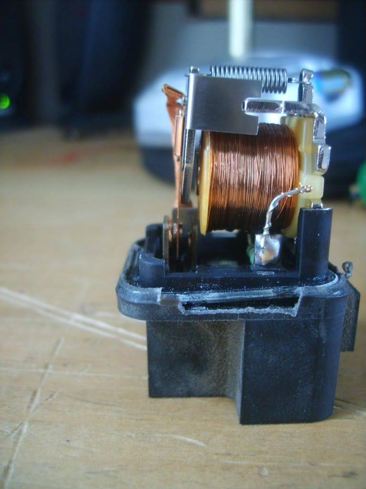
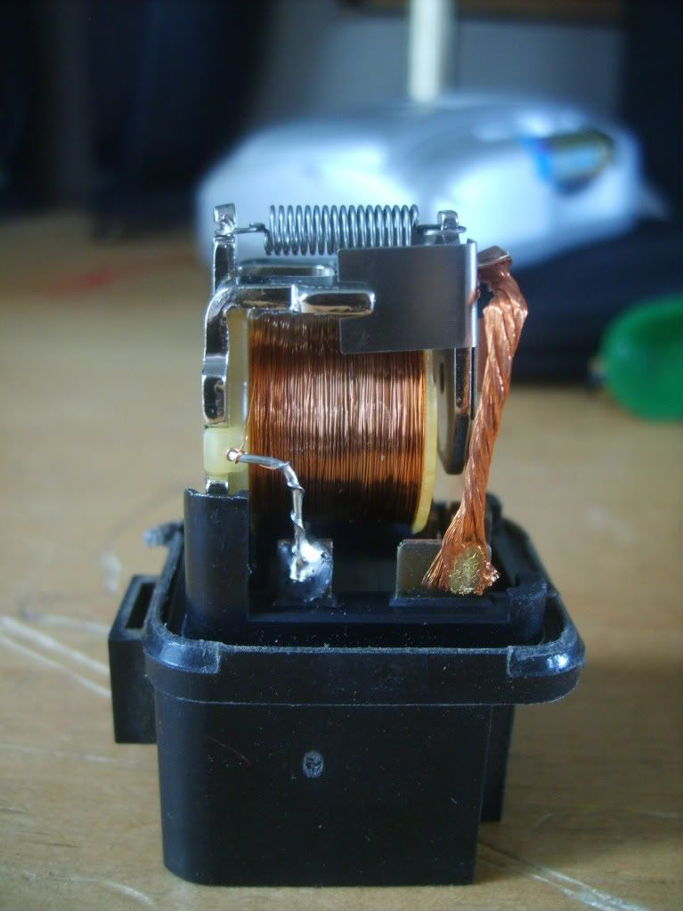
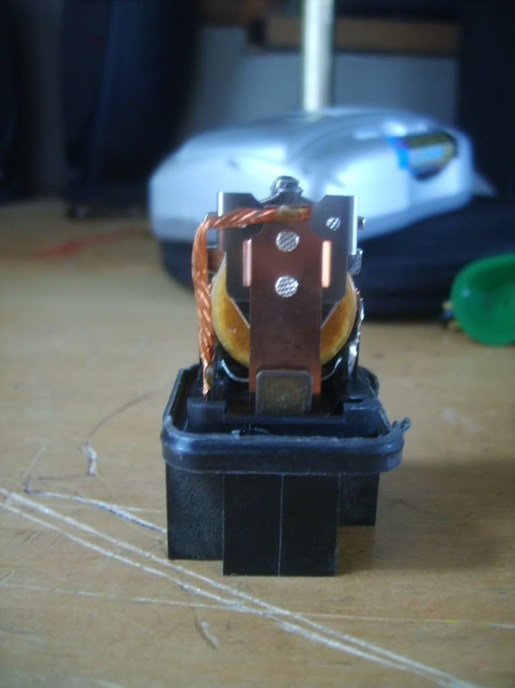

-
This writeup should be hosted somewhere like Xenonz31, I'm going to go ahead and add to it however, I took a few pics of the internals so it can make sense. I was able to pull the relay out without damaging anything, also was able to remove the cover without too much damage to the lip so it will hold in place once back together. I will however once it works run a bead of silicone around the lip to cover any areas damaged. I'm going to test it later before a permanent fix of this though, for now just to make sure it works I've got something blocking movement between the 3-5 contact so I can make sure this is all I need. The 3-4 and 3-5 contacts are similar to the headlight switch contacts. Anyway, the pics.vagabond wrote: I think you missed the point of the thread.
Here you go TR.
http://nq300zx.10.forumer.com/viewtopic.php?t=301
This is most the damage to the lip I made, the blade contact on the right that is soldered is #2 the 2 blades cumon up on the left with metal pads for contacts on them are #4 and #5, the thin one you can barely see with pads on either side is #3, you'll notice it is making contact with #4 and not #5 in the pic.

From the other side, tab on left is #1, tab on right is #3, the next pic should make some sense of #3 reaching the placement in the first pic.

ok, so you'll notice #3 follows the copper wire to a flat piece of copper the goes strait down. You can see #4 being the contact on the bottom dead center.

Basically the theory being that the contact between 3 and 4 lets the headlights stay down when you follow AZ Zbums writeup on low beams, but contact between 3 and 5 is what makes them go up with high beams, so make the 3-4 contact permanent and you will be able to control the headlights freely with the button on the dash. I pulled this relay from an 85 and I will try it in my 89 to see if that will work or if there is more required on later models. -
If I remember correctly (and I probably don't), when I unplugged the relay I modified and flashed the highbeams, the highbeams turned off straight away, but the button wouldn't let the headlights come up ether. When I unplugged the relay on the other side of the engine bay, the highbeams stayed on until I plugged the relay back in.
Eitherway, I've got no idea what relay I modified was unless someone can provide me with an Australian spec service manual. If someone can give me an Aussie manual, I'll highlight the relay for USDM model cars and post it up.
Here's a newer write up btw. I'm going to put the link in my signature, too.
http://www.auz31club.com/viewtopic.php?f=20&t=66
-
Well plan is tomorrow that I go out and try this out, I pulled this relay from an 85, top was listed the same as yours, and it was on the drivers side. I'll be trying it out on an 89 so we'll see if that changes anything. -
All black relays are the same from all angles. If you've got the right relay, the headlights wont pop up at all.
I think the alternative is to just cut the wire going to pin 5, but that's permanent, and I'm not sure what happens when pin 4 doesn't have any power going through it, the switch might not work. -
Alright so replaced the headlight relay in my 89 with the one from my 85 that I modified. The 89 has the plug under the dash already disconnected. Here is what I have found. I can switch to high beams and they stay down, but when I press the button on the dash they pop up but won't go down unless I put them to running lights. Looking at the FSM to try and figure out what will next need to be changed. The headlight relay is on the drivers side, on my 85 there was one metal bracket with relays in it on my 89 there were 2, one with a single relay, same relay as the headlight relay but for the windshield wiper relay, more to the front is 3 relays on one bracket with the headlight relay. Disconnect the harness from the relay, place a screw driver between the metal bracket and the relay and the relay will slide right out without damaging the bracket and it will go back as normal. I'll update what is required to make it work on the USDM 89. I'm wondering if the uphold relay has anything to do with it. -
[quote=Richard_85ZXTI'm wondering if the uphold relay has anything to do with it.
I'm pretty sure the relay I modified on my car was the uphold relay. It would make sense, the uphold relay is the relay that holds the lights up when they're up.
Anyone with an Australian z31 service manual, can you please post the Aussie version of this image, or tell me what 6E is in the Australian cars:
6E is in the same spot as the one I modified on my car, though I'm not sure if it switches sides for LHD cars. -
so I followed the write up and it doesnt work the only way I got it to work was to have one of my fuses removed from the kick panel on the drivers side but that disables the button i'd like to still be able to use the button so if any one gets this to work can you maybe put up better pics of what is connected where? thnx!Click here to view my Stanced VG33ET Build thread / Click here to view my Feed Back thread
-
I haven't got the chance to check the uphold relay but it might be a little bit, I've got a few too many things going on right now. -
OK so I had the wrong relay lol It's behind the windshield washer reservoir connected to two other relays and it works awesomelyClick here to view my Stanced VG33ET Build thread / Click here to view my Feed Back thread
-
my video of it working!
http://www.youtube.com/watch?v=J_bkwpxPS2E[/video]] Click here to view my Stanced VG33ET Build thread / Click here to view my Feed Back thread
Click here to view my Stanced VG33ET Build thread / Click here to view my Feed Back thread
-
On the image I posted above, can you post the number of the relay. I.e. I've circled 6E and 64E, whats the number of the relay you modified as seen by that image?MuhKaydenZ wrote: ok so I had the wrong relay lol It's behind the windshiled washer resevoir connected to two other relays and it works awesomely
Glad to hear you've figured it out. Your headlights are noisy man, soak those puppies in some WD40 or something! -
I'd have to say 64E I believe. There is a single black relay and then a group of three relays hooked together and it's the black one in the group of threeClick here to view my Stanced VG33ET Build thread / Click here to view my Feed Back thread
-
64E is the one I already modified on my 89, so may be different with 87-89, the single black one you are talking about is for the windshield wipers. 6E should be the uphold relay on USDM cars which when I get time to do it I will also try and check. -
i'm not sure about 87's but it worked great on my 86 Click here to view my Stanced VG33ET Build thread / Click here to view my Feed Back thread
Click here to view my Stanced VG33ET Build thread / Click here to view my Feed Back thread
-
Okay.
Basically, the relay you need to modify is on the drivers side, near the brake booster, regardless of if your car is left or right hand drive.

Copyright © 2006–. All rights reserved. Privacy Policy